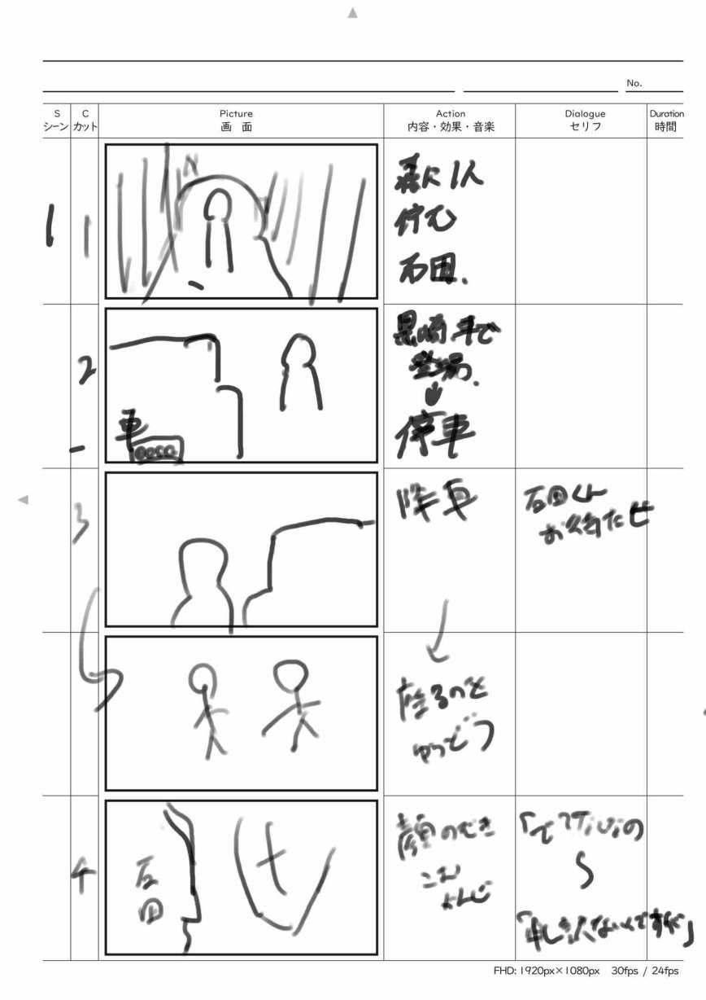
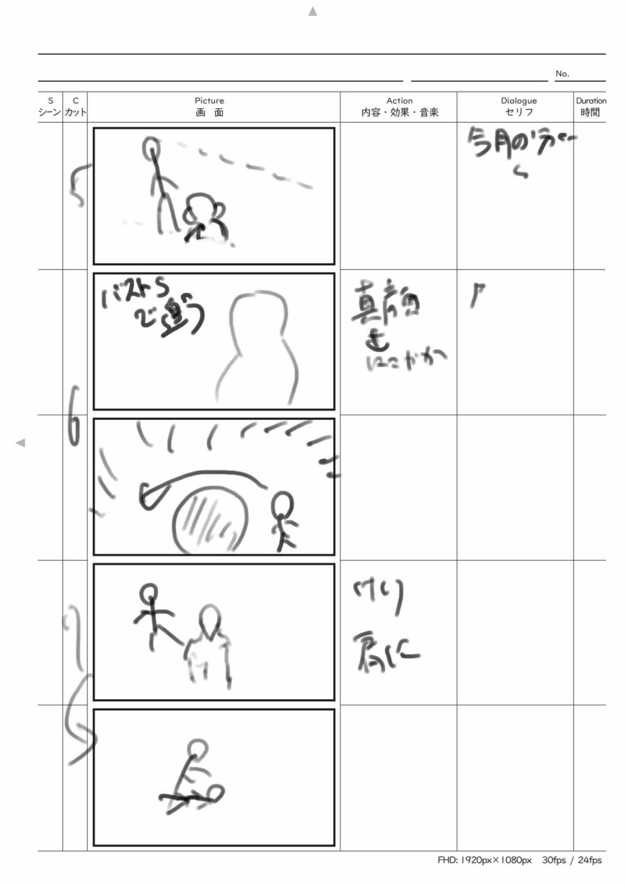
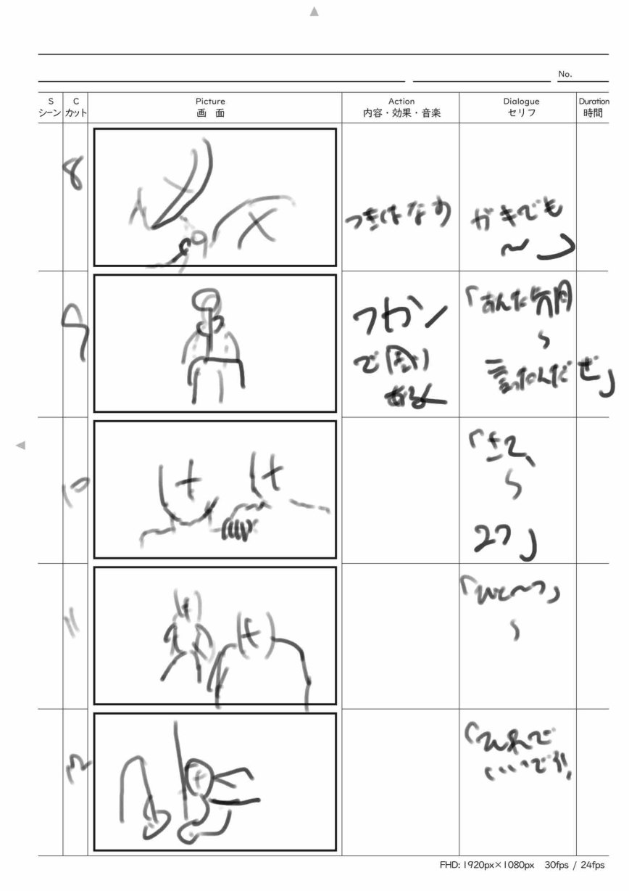
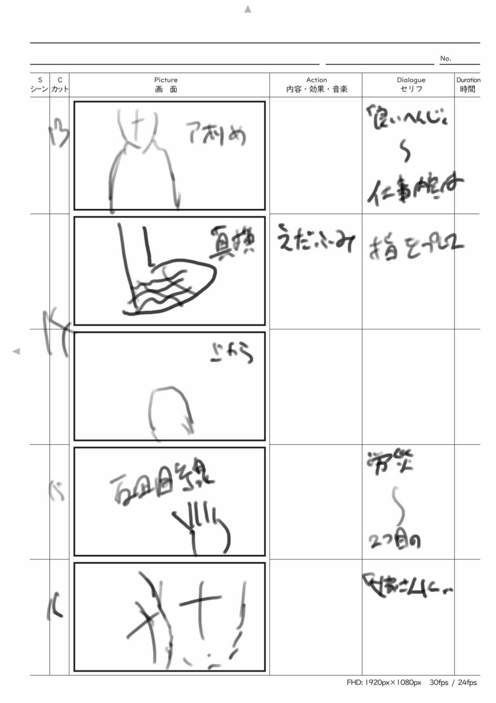

短編映画 「狂愚」
高校時代の放送部の先輩——東京工芸大学に進んだ先輩に誘われて参加した、3日間の映画制作合宿で作った短編映画です。初日に集合してその場で5人のチームに分けられ、共通の脚本を渡され、合宿地へ向かうバスの中からプリプロダクションを開始。2日目の午前に撮影、その日のうちに編集、3日目に音と色を仕上げて、東京工芸大学内の映画館で上映する——という強行日程のプログラムでした。参加者はほぼ映像学科の学生で、他大学の工学部は私ひとり。内心ビクビクでしたが、チームの他の4人は全員1年生だったため、むしろ私が制作を引っ張る役回りになりました。

3日で1本を完成させる日程
スケジュールはプログラム側で厳密に決められていて、提出の締め切りだけは動きません。この制約の中でどこに時間を使うかを決めるのが、チームの最初の仕事でした。
- 1日目 8/6
- 10:00集合、チーム分けと脚本の配布。バスの中で脚本を読み込み、宿に着いたらロケハン。17:30までに改変した脚本・フロアプラン・撮影スケジュールを提出
- 2日目 8/7
- 午前中に撮影（15:00に機材返却）。そのまま編集に入り、22:00にピクチャーロック
- 3日目 8/8
- 朝から音・色の仕上げ。バスで東京へ戻り、15:30に作品提出。東京工芸大学内の映画館で上映会・講評
キャラクターから逆算するカメラ割り
配布された脚本は改変してよいルールだったので、まずチームでよりドラマチックな結末になるよう脚本を改変。そのうえで、キャラクター設定を深く詰めてから演技を決め、その演技に合わせてカメラ割りを決める——という順番でプリプロダクションを進めました。画が先ではなく、人物が先です。
Script Revision — 結末を作り変える
改変の核は結末です。チームで議論して、幕切れを次のように作り変えました。
- 原案の結末
- 取り立てる男・黒崎に追い詰められた石田が、絶望したまま終わる
- 改変後の結末
- 限界を迎えた石田が、黒崎の背後から石で後頭部を殴り、殺害してしまう
狙いは結末のインパクトです。そしてこのオチを成立させるために、本編は「石田が追い詰められていく過程」を丁寧に積み上げる構成にしました。結末が決まったことで、各シーンの演技のトーンもカメラ割りの狙いも定まる——21歳予告の「決め台詞から逆算する」と同じ、終わりから逆算する組み立て方です。
Storyboard — 全員の合意をカメラ割りに落とす
初対面のチームだったので、自分の我を通すのではなく、全員が「これは自分たちの意見だ」と納得できる形で議論をまとめながら、狙いのカメラ割りに落とし込んでいきました。合宿の趣旨も「脚本を書いた人でも監督の作品でもなく、メンバー全員の作品」。その前提を守りながら舵を取る、というバランスの練習になりました。




私が描いたカメラ割りの絵コンテ。清書ではなく、限られた時間で「何をどう撮るか」をチームに伝えるための現場用の速記です。拡大中は ←→ でシートを切替。
午前だけの撮影から締め切りギリギリの完成まで
撮影当日は演者として参加。泥に塗れ、軽い怪我をするくらいの迫真の演技で臨みました。撮影に使えるのは実質午前中だけ。終わり次第すぐに編集へ入り、カット編集の担当の横について意見を出し合いながら、その夜のうちにピクチャーロックまで持っていきました。
翌朝、音と色のついたバージョンをチームで確認。最後に私が映像全体の彩度を大きく落として作品のトーンを締め、締め切りギリギリに完成させました。
褒められた絵と失敗した音
上映後、先輩や教授から講評を受けました。褒められたのは構図と絵作り——特に、映画館のスクリーンという大画面を活かした引きの画です。あわせて「カットが切り替わった直後、視線はまず動きのある場所・明るい場所へ向かう」という視線誘導の考え方を学び、以降の画づくりで意識するようになりました。
いっぽう音は失敗しました。取り直しが重なって撮影時間が押すなか、カットごとにレコーダーのRECを切り替える時間を惜しんで回しっぱなしにした結果、電源が切れて音声を失ってしまいました。カメラの内蔵マイクの音でどうにか救済しましたが、自分が音に慣れていれば防げたミスです。この失敗から、音への意識が一段上がりました。
順位をつけるプログラムではありませんでしたが、主催の先輩の一人からは「一番面白かった」という言葉をもらいました。短い制作期間と慣れないチームでの、荒削りだけれどその場でできるベストの一本です。
- 公開
- 2025年8月8日（合宿最終日に東京工芸大学内の映画館で上映。本編はYouTubeで公開）
- 形式
- 短編映画（実写）
- 体制
- 5人チーム（監督／カメラ／録音／編集／演者）。私以外は東京工芸大学の1年生
- 担当
- 演者（配役）。あわせて脚本の改変・カメラ割りなどプリプロダクションを主導し、編集への立ち会いと仕上げの彩度調整を担当
- 脚本
- 運営から配布された共通脚本を、チームで改変して使用
- 制作期間
- 2025年8月6日〜8日（3日間の合宿）